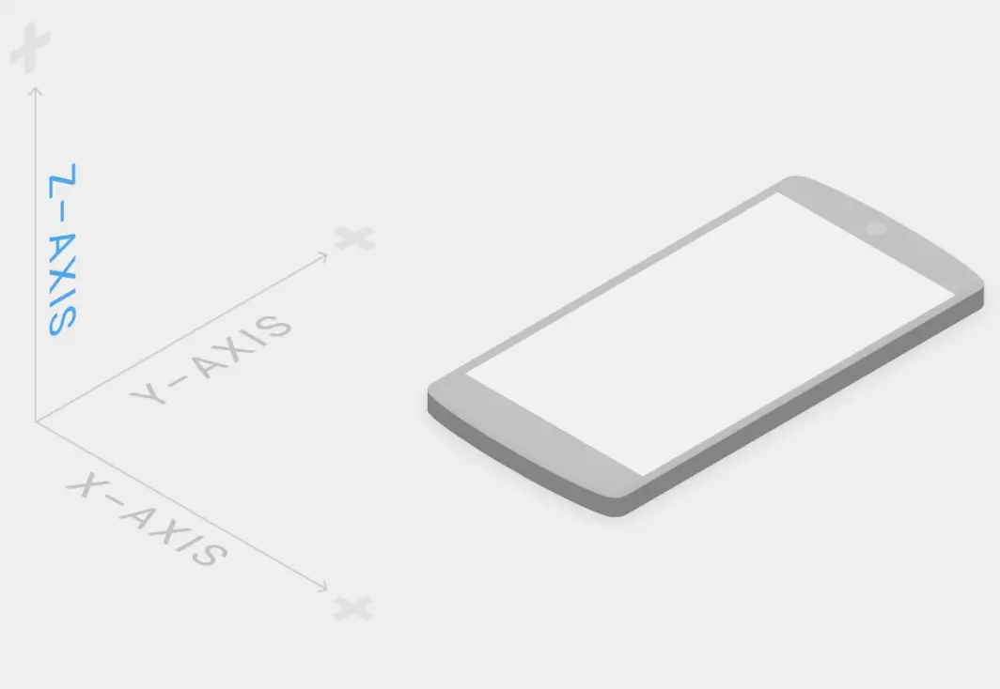
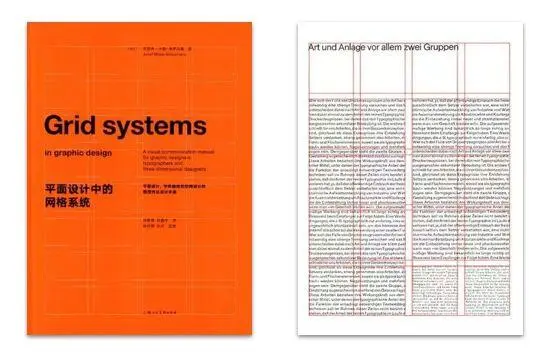
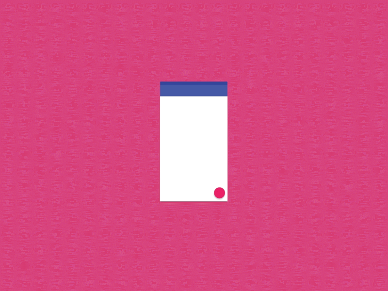
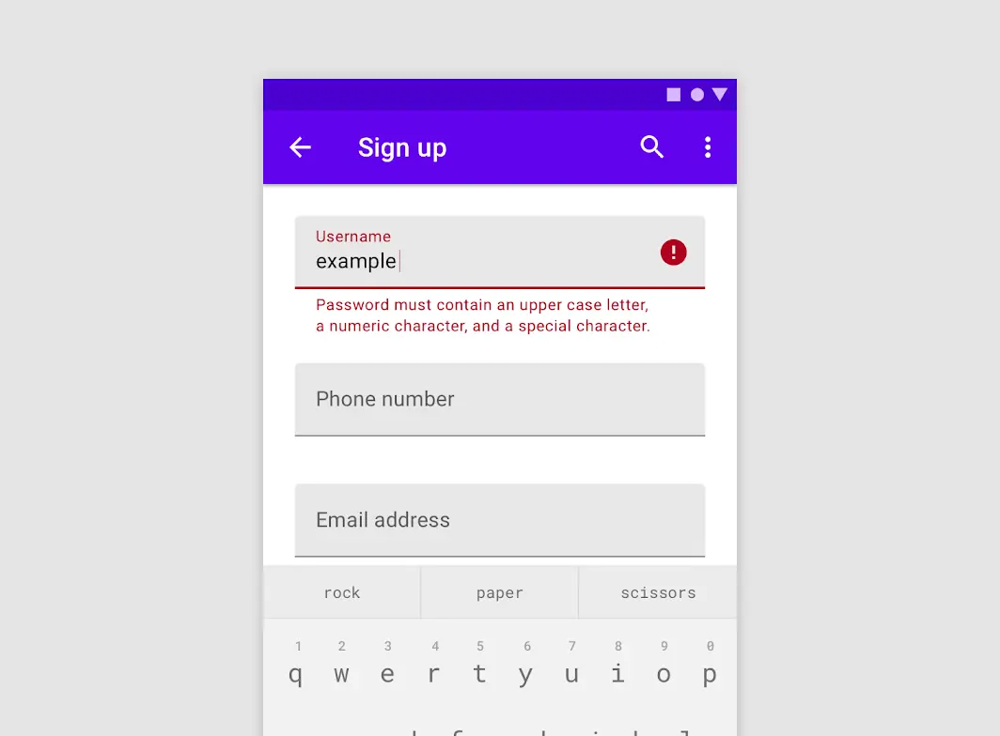
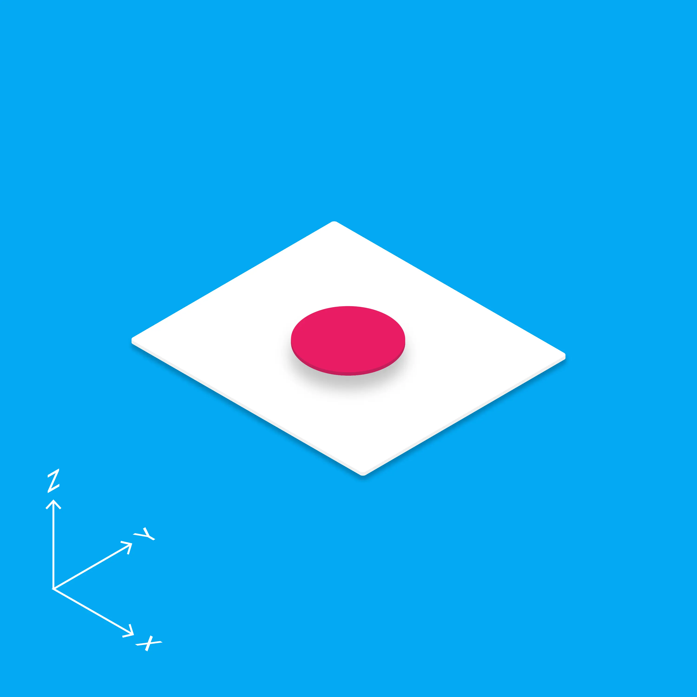

material design 简介及背后的理论
material design
—— 将科学引入艺术，让没有什么经验的人也能做出体面的设计

简介
We challenged ourselves to create a visual language for our users that synthesizes the classic principles of good design with the innovation and possibility of technology and science. This is material design.
Develop a single underlying system that allows for a unified experience across platforms and device sizes. Mobile precepts are fundamental, but touch, voice, mouse, and keyboard are all first-class input methods我们用了洪荒之力，为用户设计了一种视觉语言，它综合了传统设计原则中好的部分，以及科学技术带来的创新和可能性等。这就是 material design。
（material design 可用来）开发一套基准系统，在这个系统的基础之上，构建跨平台和超越设备尺寸的统一体验。它遵循基本的移动设计定则，同时支持触摸、语音、鼠标、键盘等输入方式
设计原则
material（材料）其实是一个隐喻：
这个隐喻是理解 material design 其他内容的基础。在考虑 material 设计空间以及一系列元素动作行为设计的时候，都不要忘记背后的隐喻。鲜明，形象，精心设计（就是说设计上是预先安排的，设计后面存在预设动机）
借鉴传统印刷平面设计规范——排版、网格、空间、比例、配色、图像使用——来指导视觉处理。这些规范不仅仅能讨好眼球，同时还拥有建立层次，赋予意义和引导焦点上的意义（多是认知心理学上的意义，后面会谈到）。有意义的动画效果
动画是前端交互中非常重要的一部分，但是 material design 的动画运用并不是随意的，它从现实中抽象而来，并且符合用户的认知模式。
下面我们就对官方的这个概括做一个解读
Material Design 背后的“科学技术”
从传统平面设计中汲取营养
在官方介绍中提到，material design「综合了传统设计原则中好的部分，科学技术带来的创新和可能性」。其中的「传统设计原则」比较容易理解，早在印刷时代，在如何将信息以更美好，更容易让人接受的形式展示出来上面，人们已经做了很多探索，并且总结出了一些行之有效的平面设计原则：
- 一致性
- 减轻记忆负担
- 对齐，相关
- …
这些最初用于传统纸质媒介的设计准则，被搬到新的电子媒介上来并且取得了很好的效果——要知道网页刚开始除了页面上有一些超链接外，其他展现方式跟纸质媒介中的丰富性相差甚远，传统平面设计中的理念能对 web 设计产生非常有用的指导，比如网格系统：

随着 web 的发展，电子媒介就有了自己独特的地方，不再像纸质媒介那样是纯静态的了——它有了真正的「交互」。新的 web 特性也需要寻求其他的理论支撑，如果不能再从传统的平面设计中借鉴，如何开创一套适用于 web 这些新特性的设计准则？这就来到了 material design 文档中所说的「科学技术带来的创新和可能性」。
开拓新的设计领域
如果传统平面设计不能直接借鉴，那么就看看平面设计背后有没有可以深入挖掘的内容。在寻求理论的支撑时，需要向还原理论方向更深处寻找，至于还原论的方向，简单来说如下：
设计的基础是心理
心理的基础是生物
生物的基础是化学
化学的基础是物理
虽然这些概括的命题争议很大，在这些学科中至少可以说「部分如此」。在设计上往更深层次寻找，基本上到「心理，生物」这一范围。找到更深层次的理论，就为「创造性」设计提供了基础，使得设计空间的表达可以发生转变，也不必再囿于传统平面设计在新 web 媒介下的套用，完全可以根据这些深层理论进行自由发挥，创造出适合 web 的设计形式。
说了这么多，那么这些科学技术上的创新，可能性，指的究竟是哪些内容？
认知心理学
在说认知心理学之前，先来看一个来自头条圈的小例子：
这个小例子多少说明了认知在前端界面中的地位并不像人们想象中的那么低，不过很多人都没有意识到这有多重要。
人类认知事物的过程（感知，学习，推理，记忆等）是具有某些固定模式的，人们在前端领域所进行的认知行为也没有脱离这个范围。这些模式的形成基于人类的生物学结构，虽然工业革命以来，人类自身和所处的环境被迅速地改造，但是进化毕竟是以百万年为单位的，人类生物结构上的进化已经早已基本完成，在可以预见的时间内，这种生物结构也将一直保持稳定。在心理学上，已经有不少结论可以对设计有所教益：
- 经验，环境，目标对认知的影响
- 心理上的格式塔现象
- 短期记忆与长期记忆
- 阅读行为的研究
- 决策心理
- …
上述所列研究在设计中都有所应用，而关于为什么要讨论认知心理学，《认知与设计》中有这样一段话（稍有增改）：
因为遵循用户界面设计准则不像遵守烹饪食谱那么按部就班。设计准则经常描述的是目标而不是操作。它们特意及其概括从而具有更广泛的适用性，但这也意味着，人们对它们准确的意义和在具体设计情景上的适用性经常会做出不同的诠释
更复杂的是，对于一个设计情景，经常会有多个规则看起来都适用。这就要求要对不同的设计之间做出权衡，而权衡的依据不能仅凭设计师个人喜好，需要有相应的数据，理论支撑。数据可以从运营哪里得来。
而理论只能求助于更深层次的认知心理学
在了解用户认知模式的情况下，就不容易出现「符合设计原则，但不符合用户认知」，导致用户体验不好的情况。比如上面所举例子中，给… 加上修饰，是符合不少设计规则的——更一致，跟其他图标相容性更好，更加显眼等，但它是不符合认知的，用户在此很容易出错。
人类身处现实世界之中，而思维有时则在互联网中畅游，这就在现实环境与互联网环境中产生了一种「语境转换」——人们会根据现实中的某些特点来认知互联网中的事物，比如垃圾桶代表回收站等等。借助于心理学，可以做到从现实到互联网设计的较为平滑的认知过渡。对于运动效果也是同样，在真实世界中发生的运动都是平滑的，不会出现折线运动（撞击除外）。这也是平滑过渡的运动看起来自然的原因，而且由于这种自然性，也更容易给人熟悉感，更容易被人接受。
另一个产生「语境转换」的地方是应用中不同场景的切换，需要精心设计转场动画进行视觉引导，从而使过渡更加自然和平滑，让人的思维不至于断层，贝塞尔曲线也是在这种意义上得到了充分的应用。

生物学
主要是进行生物结构特性上的研究，认知心理学可以在此寻求理论基础，比如：
- 脑神经科学
- 眼动研究
- 眼球成像模式研究
- 这些研究更为的基础而且多少会涉及到进化论上的内容，这里不进行展开，举一个关于眼球感光细胞的理论：
人类视野的空间分辨率从中央向边缘锐减，有如下三个理由
像素密度
每只眼睛有 600 到 700 万个视锥细胞，它们在视野中央（一个很小的叫做中央凹的区域）的分布比在边缘紧密的多（对应中央视觉）。中央凹没平方毫米有约 158000 个视锥细胞，而在视网膜的其他部分，每平方毫米只有 9000 个视锥细胞（对应边界视觉）。数据压缩
中央凹的视锥细胞与视觉信息处理和传导的起点——神经节细胞——的连接比是 1:1，而视网膜的其余地方，多个光感细胞（视锥细胞和视杆细胞）才与一个神经节细胞相连。用术语来说，边界视觉的信息在被传递到大脑之前是经过压缩（数据有损）的，而中央视觉不是。资源处理
中央凹仅占视网膜面积的约 1%，而大脑皮层却有 50% 的区域用于接受中央凹的输入，另一半处理来自占视网膜 99% 的区域的数据。这导致我们视野中央的视觉分辨率要远远高于其他地方，而在一臂距离下，眼球的中央凹视觉面积大概像拇指指甲那么大，也就是你当前在屏幕上看的三个字宽度左右——这就是视觉焦点的基础。
——《认知与设计》 [美] Jeff Johnson（引文略有改动）
关于眼睛的生物学研究告诉我们，人类在观看屏幕时，其视觉焦点基本只有拇指指甲盖大小，在此之外的视野都是「边界视野」。在这种视觉模式基础上，如何进行视觉引导，把用户的注意力引向那些希望用户看到的信息上面，也是一个挑战。最直接的一个例子是输入框出错时，错误提示放置的位置，出现的方式等等。

其他
物理学上的抽象 && 合理的量化
material 的官方介绍中，还提到「material is metaphor」，material 是个隐喻，隐喻什么？
material design 所隐喻的是一种设计材料（material），姑且称之为「material 卡片」是从现实中抽象出来的，去掉现实中的杂质和随机性，保留空间关系、变化与过渡，光影效果。这种材料具有厚度，材料之间有空间关系。这其实暗示着一个更大的隐喻 —— 整个 material design 其实隐喻着一个特殊的设计空间，这个空间具有三维结构，而 material 卡片则是组成这个空间的基本材料。

为什么要费这么大的功夫，来抽象一种设计材料，抽象出一种虚拟空间？
因为材料和构建规则一起决定了一致性
为了理解这件事情，我们可以从真实世界中的建筑设计入手：
所有的设计都可以形象的称之为「带着镣铐跳舞」，这一点在建筑设计上尤为明显。在现实中的建筑设计，要求采用基本的砖块，混凝土，钢材，玻璃等可用的原料，做出出符合真实世界物理规律的设计。
要知道世界上大多数建筑物都是大同小异的，只有少部分设计师才能设计出既符合规则，又超脱于世俗的建筑。
如果材料和规则限制太大，则会造成表现形式上的死板，material design 虽然抽象于现实世界，但是也增加了现实中所不存在的魔法特性，，比如 material design 中的卡片可以随意拆解，合并，变形等等。
MD 中存在一些量化标准，这些量化标准为设计提供了一种更强一层的规范作用：
- 卡片厚度
- 卡片高度差
- 颜色选择
- 动画时间
- 连续图像之间可以形成视觉融合的最长间隔：20ms
- 一个视觉事件与我们对它完整感知之间的时间差：100ms
- 事件进入意识的编辑“窗口”：250ms
- …
这种「有根据地量化设计」观念是超前的，它使设计不再是那些具有丰富经验的大师们的专属，不再是灵感的迸发和单纯个人喜好的表达。如果你了解一些科学史，就能明白这种在设计语言上「将科学引入设计」的行为的重要性。如果做个对比的话，相当于是在向来以神秘方式进行的炼金术中，引入了量化的科学的方法——它变成了化学。
在更早的设计中也可以见到科学与技术结合的影子，但是没有一种能像 material design 这样，借助一种隐喻空间的形式，如此彻底地进行设计上的改造与规范。
上述这些特点，可以说是「让经验不多的人，也能做出体面的设计」的原因。
让经验不多的人也能做出体面的设计？
什么是体面的设计
- 视觉上具有美感
- 有利于信息的精确传达
- 背后有心理学基础，符合用户的认知习惯（而不仅是设计者个人喜好）
- material design 已经将上述东西融入到语素之中了，所以借助 material design 进行前端的设计在某种程度上决定了它的下限——不会特别烂。
Material Design 试图在艺术和科学之间找一个设计点，这是可能的——虽然它对设计者的要求非常高。
在我看来，Material Design 是部分做到这一点了，它拥有非常清晰和极具启发性的思路。即使某天作为整体的 Material Design 消解了，也会有很多极富启发性的思想被延续下去。
Material Design 思维导图
上图是根据 Material Design 设计准则整理出来的思维导图，右侧几个分支叙述了 Material Design 包含的最基本的组件，结构。左侧的分支则介绍了一些经验性的最佳实验，读者可以根据前面的叙述，看看能否在背后找到这些原理，技术的痕迹。
参考
超链接：
material design 官网
如何理解 Google 的 Material Design 设计语言？
The Verge 对 Matias Duarte 的访谈
书籍
《平面设计中的网格系统》
《认知与设计——理解 UI 设计准则》
《Don’t Make me think》
- 这是最初版的 material design 官网，2024 年已经更新到 m3 版本 ↩

人存于世，因缘际会
我是兴华，很高兴见到你